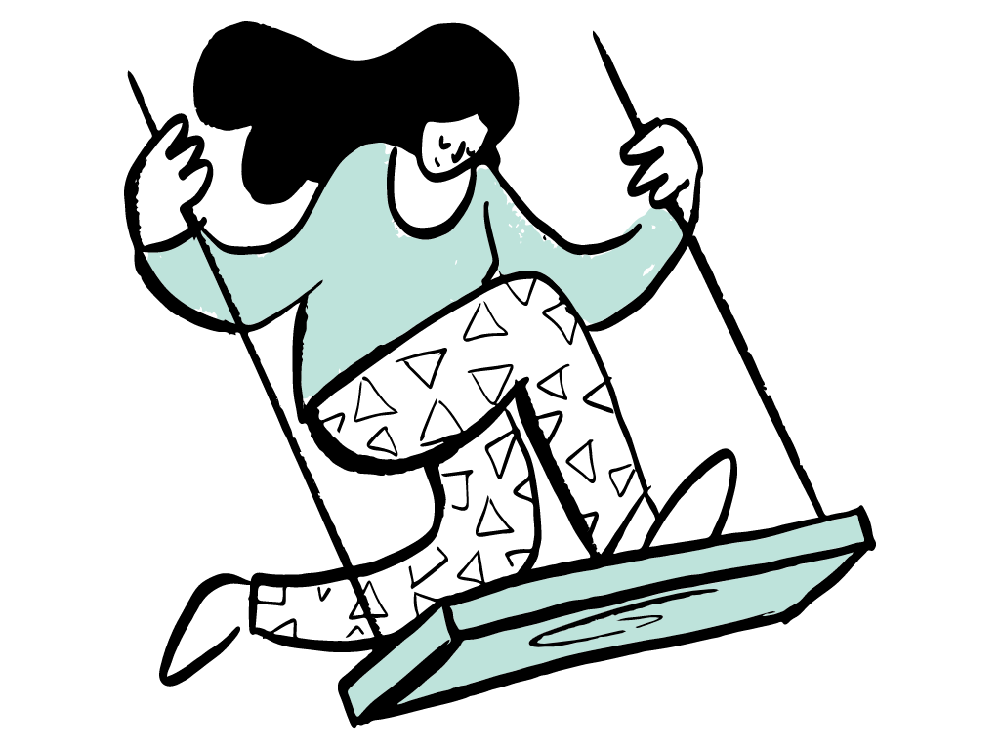

What is 英語お悩み相談室?

英語習得への道のりは山あり谷あり。「最近話せるようになってきた！」と実感できる時もあれば、「何をやっても伸びない..」と壁にぶつかることもあります。
実は何の悩みも迷いもなくどんどん上達した、なんて人はほとんどいなくて、みんな何かしらの悩みや停滞期を経験して、それでもめげずに続けていくことで上達していきます。それでも、そんな悩める停滞期はできるだけ早く抜け出したいもの。だけれど、英語学習のブログや動画など周りに情報がありすぎて、どれをやればいいのか分からない。
このページは、そんな英語学習で行き詰っていたり、何をすればいいか迷子になってしまった方のお悩み解消をサポートしたいという思いから作りました。
ここではまず、悩みが具体的にどんなものかを探ります。最近の学習や経験を一度振り返って、自分が感じている壁は何なのか、ご用意した質問を元に分析してみてください。悩みには必ず原因があります。その原因に合わせて、過去に英会話スクールでサポートしてきた方々やわたし自身の経験に加え、「第二言語（外国語）習得理論」の観点から、解消のための効果的な学習アドバイスをします。
ご用意した悩みの選択肢にご自身のお悩みが該当しない場合や、ご提案の学習方法でもなかなか上達しなかったり進め方が分からなかったりする場合などは、お問い合わせ（CONTACT）からお気軽にご相談ください。
学習を続けていると、その成長段階によって得意なことや苦手なことが変化していきます。一つ山を乗り越えてまた新たな課題を見つけたら、またここへ戻ってきてください。
この場所が、あなたの英語学習の道しるべになれば嬉しく思います。
macco